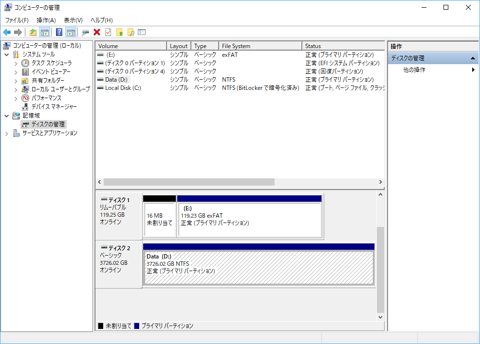

日記：俺の 3TB が次元のはざまに旅立った
公開日：

うちの Surface Book 2 はストレージが 512GB しかないので、仮想ディスクイメージが複数あったりすると割と圧迫されてしまう（これでも OneDrive の File on Demand 機能でだいぶ楽にはなったのだけど）。というわけで、古いデスクトップから 3TB の HDD を抜いて、Amazon から適当な外付け HDD ケースを購入して挿してみた。

ORICO 3.5インチ HDDケース ドライブケース SATA I/II/III対応 高速 USB3.0 接続 UASP転送モード 8TB対応 マットブラック
- 出版社/メーカー: ORICO Technologies Co.,Ltd
- メディア: エレクトロニクス
- この商品を含むブログを見る
当初は順調に動いているようで、ファイルの内容を見ることもできたのだが、昨日か一昨日、データの書き込みを行ったところ……なんかファイルシステムが壊れてアクセスできなくなった。ここ数年分のデータが全部消えた／(^o^)＼
まぁ、大事なデータは全部クラウドと同期してあるので、それほど大ダメージではない（震え声
消えたデータはしょうがないとして、外部ストレージは必要。もう一度フォーマットしてみると、問題なく書き込みができた。チェックディスクでもとくにエラーはないみたい？ ドック経由で接続しているのがダメなのかもしれないので、本体の USB に繋ぎなおしてもみた。
しかし、一晩経つとまたファイルシステムが壊れている。もしかしたらケースがダメなのか？ でも、この HDD はいつ買ったか思い出せないぐらい古いし（このブログができる前からある？）、HDD の可能性もある。どっちが原因だろうか。いや、他にも問題があるかもしれない。
HDD ごと買い替えるのが手間としては一番楽なのだけど、今回はちょっと考えて NAS キットを購入することにした。NAS というのは職場で触ったことはあるけど、自宅用には購入したことがない。メイン PC のデータバックアップが主な用途なので、複数のデバイスからアクセスできる必要はないし。でも、安い外付け HDD ケースよりはいろいろしっかりしてるだろうし、メディアサーバー的に使えればそれはそれで便利なのかもしれない――なにかを録画してみるという習慣が皆無なので、使うかどうかは微妙だが。

Synology DiskStation DS216se シングルコアCPU搭載多機能2ベイNASキット CS5996 DS216se
- 出版社/メーカー: Synology
- 発売日: 2015/10/15
- メディア: Personal Computers
- この商品を含むブログを見る
チョイスしたのは Synology DiskStation というやつ。こういう系の製品はよく知らんのだけど（本当に何も調べてないぞ……）、Amazon をザラ見する限りでは、だいたい
- HDD のベイの数
- CPU のコア数（トランスコードするときとかに威力を発揮するらしい？）
- 著作権保護通信への対応などの付加機能
で差別化されているようだ。Synology はアドオンだかなんだかでいろいろ機能を拡張できるっぽくて、よく話に聞くし、遊んでみるのはよさそう。トランスコードなんかをする予定はないので CPU は一番安いシングルコア、HDD のベイの数は2つをチョイスした。HDD がボロくてダメなときは新しく追加する予定だし、そのときはベイが2つあるといろいろ何かできるかもしれない。なんかベイ間でミラーリングとか……できるのかな。
ちなみに、自分は基本的にデータのバックアップみたいなことはやっていない。大事なファイルは OneDrive や Dropbox に置いてあるし、音楽や写真、動画、業務データのアーカイブは OneDrive for Business（1TB）に保管してる。アプリケーションの設定を引き継いだりすることに意を砕くのもやめた。なるべくデフォルトの設定に慣れるようにしているし、最近では設定を同期してくれるアプリも増えたから、それほどこまらない。本当に必要な OS の設定は、だいたい PowerShell の初期化スクリプトでイジるようにしている。
そんなわけで、うちにバックアップドライブなんかはいらないのだけど精神安定剤としては割と役に立つ。たとえば
- PC をリフレッシュするときに Users フォルダー以下をぶち込んでおく
- いろいろ拾った歴代 OS の ISO イメージファイルを保管しておく
- 実験用の仮想マシンイメージをおいておく
- スクリーンショットなどなど、「いつか使うかも」と思うけど絶対使わないデータを逃がしておく
みたいな。ふっとんでもそれほど困らないデータしか置かないから、なくなってもほとんど問題ない（仮想マシンイメージを作り直すのはちょっと面倒な気もするけど、フレッシュな環境がほしくて作り直すことはよくある）。実際、ここからデータをサルベージしたことなんてほんの数回しかない。つまり、「とりあえずバックアップした」という安心を得るためだけに使っているわけだ。
よく考えればムダでアホな話だけど、精神の安定というのはなかなか得難いもので、たったこれだけで得られるならば安いもの……じゃない？ 今回はちょっとした出費になってしまったけど、それも遊べればペイでき……そうかな。以外に便利な使い方とか発見できるかもしれんしな。
到着は土曜日になるみたいなので、週末はこれで遊べそう。晴れたらバイクでどこか行きたいから、実際に試すのはちょっと後になるかもしれんけど。